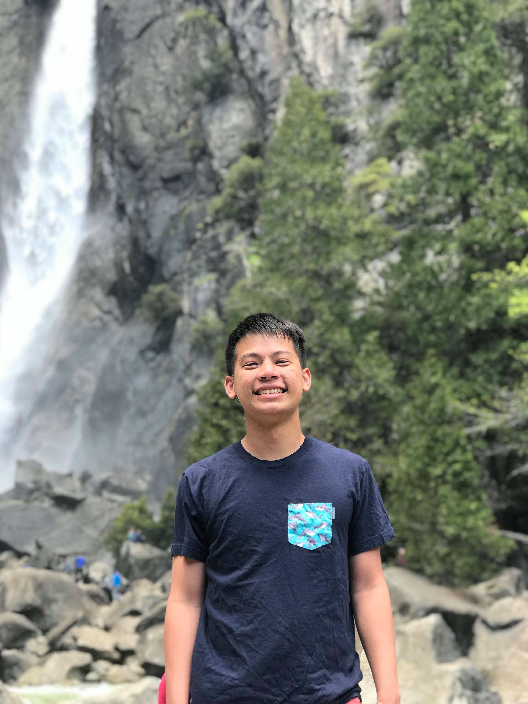

 Hi! My name's Theodore, but I go by Teddy. I'm a computer science major at UC Berkeley and I'm currently an intern on the data engineering and visualization team at Illumio, a cloud computing security startup. During the school year, I've been working at Berkeley Institute of Data Science under Dr. Stefan Van der Walt for a year working on a Github command line wrapper with more functionality related to pull requests and issues for open sourced projects. I've been a reader for CS70 for two semesters, and will be a reader for CS170 in Fall 2018. I'm also an Industrial Relations officer for Upsilon Pi Epsilon(CS honors society). Check out my resume or LinkedIn for more info. Or feel free to shoot me an email at teddy.theodore.tran@gmail.com!
I'm also a very good table tennis player! I've represented USA in many international competition spanning 6 continents(with the exception of Antartica :D). Some awards I have won are National Men's Doubles Champion, North American Men's Team Champion, National Collegiate Team Finalist, National Men Singles Quarterfinalist, and National Cadet Champion. These days, I represent UC Berkeley in collegiate tournaments as well as being the head coach for UC Berkeley's table tennis club.